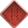

Kirigakure no Sato
O Mandato do Yondaime Mizukami: Auriosh da Névoa Sangrenta
Líder da Guilda Hoshigaki
Uma Nova Era de Sangue e Honra
A Vila da Névoa não perdoa os fracos e não tolera intrusos. Sob a liderança do 4º Mizukami, Kirigakure opera sob a doutrina de "Fronteiras Fechadas". Não possuímos pactos oficiais com outras vilas. Nossa força reside na organização impecável, no poder letal de nossas divisões e no terror que instilamos em nossos inimigos.
Estrutura Militar
7 Espadachins da Névoa (7SM)
Elite PvP & FrontlineA elite absoluta da vila. Focados em letalidade no PvP e total dedicação nas operações da Névoa.
- Liderança e Seleção: Definidos por um Torneio de Pontos (Round-Robin). Os 7 melhores conquistam as espadas. O Kage elegerá o Líder da organização dentre estes 7 vencedores.
- Presença Obrigatória: 7SMs são a infantaria pesada. Se estiverem online durante uma invasão ou convocação de caçada, a participação é mandatória.
- Vagas e Sucessão: Qualquer espada que fique vaga acionará um torneio rápido e imediato para definir seu novo portador.
Divisão Especial (ANBU)
14 VagasAs sombras do Mizukami. Focados na proteção contínua do Kage e na caçada implacável aos alvos do Bingo Book (renegados).
- Identidade Apagada: Proibido falar no chat público enquanto mascarado. Comunicação apenas por RP de ações ou chat privado. Apenas o alto escalão da vila (Mizukami e Cúpula) sabe quem são seus membros.
- Dever Obscuro: Cumprem missões de assassinato contra traidores e renegados. Não há pagamento, recompensas ou glória pública; eles caçam porque é o dever absoluto e não reconhecido que devem à Névoa.
Corporação Policial
20 VagasA primeira linha de defesa. Operam sob a doutrina de "Fronteira Fechada" para garantir a soberania do território.
- Patrulhas Externas: Realizam rondas constantes nos mapas ao redor da vila para impedir acesso de intrusos e detectar invasões.
- Batedores: Ao avistar forças inimigas, recuam para alertar a cúpula antes de iniciar o combate massivo.
- Prisão: Usada como humilhação final após derrotar um invasor em batalha.
Corporação Médica
20 Vagas (+10% Chakra)Conhecidos como o Escudo de Sangue. Não são meros suportes, são a espinha dorsal de qualquer operação de elite.
- Presença Obrigatória: Caçadas da ANBU e rondas de alto risco da Polícia devem ser acompanhadas por médicos.
- Priorização Tática: A vida do próprio médico vem em primeiro lugar, seguida pela vida das lideranças da vila e, por último, a vida dos outros ninjas da Névoa.
Tradições da Névoa
Bloody Mist
Evento semanal de PvP sangrento no formato Free-for-All (Todos contra Todos).
Regras: Todos os participantes são soltos simultaneamente em um mapa delimitado. Não há times, não há regras de engajamento, não há aliados. Apenas o caos absoluto e derramamento de sangue. Vencedores anteriores (portadores do título Bloody Ninja) estão proibidos de participar de futuras edições.
Objetivo: Sobrevivência extrema. O objetivo não é apenas matar, mas ser o último ninja de pé no meio da carnificina, provando ser o mais letal e astuto de Kirigakure.
Recompensa: Ryos, um cargo exclusivo de reconhecimento no Discord da vila e pontos cruciais na avaliação do Exame Chunin.
Demon Brothers
Evento mensal de PvP em duplas (2v2).
Regras: Torneio em chaves de eliminação. A dupla que vencer ganha o direito de desafiar os atuais Demon Brothers.
Desafio: Se os atuais vencerem, mantêm o título. Se os desafiantes vencerem (ou se os atuais não comparecerem), assumem o manto de Demon Brothers por 1 mês.
Recompensa: 10.000 Ryo para cada vencedor (Total 20.000) e o cobiçado título temporário.
Torneio Sannin
Evento de Fim de Mandato em trios (3v3).
Regras: Equipes de 3 pessoas se enfrentam em combates táticos. A consagração final da força conjunta da vila para decidir a lenda da geração.
Recompensa: Título eterno de "Sannin Lendário" e 63.000 Ryo distribuídos: 30k (1º lugar), 21k (2º lugar) e 12k (3º lugar).
Política Interna e Externa
Isolacionismo Armado
Zero Pactos Oficiais
A Névoa não assina tratados de paz. Nossa política oficial é de neutralidade agressiva. Qualquer ninja não pertencente a Kirigakure em nosso território é considerado um alvo.
Aliança das Sombras
Contratos não oficiais existem com a facção renegada Kuronami (Akatsuki). Eles são financiados secretamente para atuar como mercenários em conflitos contra a Folha ou Areia, mantendo as mãos da Névoa formalmente limpas perante o mundo.
Cultura do Trashtalk
Pressão Psicológica
O trashtalk é encorajado para pesar o psicológico inimigo. É liberado chamar de ruim, mandar o clássico "?" no chat após o oponente errar e atacar a jogabilidade adversária. A regra de ouro é simples: ataque o desempenho, o avatar e as decisões no jogo, nunca a pessoa real.
A Linha Vermelha (Tolerância Zero)
Cruzar essa linha resultará em banimento imediato de qualquer organização da vila e denúncia à administração do jogo:
- Preconceito: Homofobia, xenofobia, intolerância religiosa, etc.
- Ataques Reais: Aparência física, saúde, deficiências ou finanças fora do jogo.
- Família: Qualquer ofensa envolvendo mãe, pai ou parentes.
- Ameaças & Doxxing: Desejar morte/doença, ameaça de agressão física real ou expor dados pessoais (nome, endereço, redes).
Disputas Internas
Conflitos entre Membros
Discussões bobas de ego ou desentendimentos contínuos no chat da vila devem ser finalizados de imediato. Não polua os canais. Existem apenas 3 formas de resolução aceitas:
Blood Challenge: Resolvam na arena de Asoki publicamente. O vencedor prova seu ponto; o perdedor será exilado da vila por 7 dias.
Pacto de Silêncio: Calam-se, encerram a briga e a vida segue normalmente.
Intervenção Administrativa: A liderança aplica mute em todos os envolvidos à força e o assunto morre.
* Questões de alta gravidade (traição, cruzar a Linha Vermelha do Trashtalk) serão julgadas diretamente como crimes pela Cúpula.
Ascensão, Exames e Títulos
Sannin Lendário
O ápice do recognition. Concedido ao trio que vencer o Torneio Sannin (3v3). Marca o nome dos shinobis para sempre na história da vila como lendas vivas.
Demon Brothers
Concedido à dupla mais letal e em sintonia da vila que vencer o torneio mensal. Se derrotados pelos desafiantes no mês seguinte, o título é transferido.
Bloody Ninja
O título da sobrevivência pura. Concedido unicamente ao último ninja de pé após a carnificina do Expurgo Semanal "Bloody Mist". Uma vez conquistado, o ninja é imortalizado na história e não poderá mais participar de edições futuras do evento.
Exame Chunin (Fim de Mandato)
A avaliação para subir de patente na Névoa Sangrenta é rigorosa, transparente e baseada em mérito, lealdade e sobrevivência.
O Campeão (1 Vaga Chunin)
Garantida de forma direta ao vencedor absoluto da final do evento do Exame Chunin.
Mérito Extraordinário (1 Vaga Special Jonin)
Concedida ao jogador que mais se destacar na vila, seja como player influente ou por ajudar os membros intensamente. Não é necessário passar da 2ª fase do exame. O nome será avaliado ao longo de todo o mandato e anunciado no dia do Exame.
Avaliação do Conselho (Vagas Restantes)
Requisito: Passar do "Mar de Sangue"
Os ninjas que passarem do Mar de Sangue serão avaliados com notas de 1 a 10 nos critérios abaixo. A soma total decidirá quem merece a ascensão:
- Contribuição: Auxilia a vila fazendo eventos, doando para o banco ou ajudando novatos?
- Presença e Histórico: É um jogador reconhecido na vila ou já participou de alguma organização oficial?
- Veterania: Joga há muito tempo ou há pouco tempo? (Tempo de dedicação estimado em meses).
- Aprovação da Cúpula: O quanto cada membro do Conselho e o próprio Kage acreditam que o jogador merece o título de Chunin?
- Letalidade: Quantas vitórias o jogador acumulou nos eventos semanais do "Bloody Mist"?
Oficiais da Vila
Tesoureiros
Administram os fundos gerais da vila e possuem acesso direto à conta bancária. Responsáveis por financiar operações, pagar recompensas, gerenciar o fluxo e anunciar itens pelo banco.
Líder de Raid
Comandante de campo. Convoca a vila para raids massivas, organiza os esquadrões e dita as estratégias de combate durante as batalhas.
Instrutor
Guia dos novatos. Atua no canal de novatos do Discord ensinando mecânicas e estratégias para garantir o futuro da vila.
Planejamento Financeiro
Orçamentos de Organizações
Orçamento: ANBU
Verba destinada a 18 alvos do Bingo Book: 2 Ninjas Renegados e 16 Ninjas do Alto Escalão de outras vilas.
Semanal
Orçamento: 7SM
Aporte da vila para o Torneio Inter-Vilas (7SM vs 12G vs Puppet Brigade). Se vencerem, a premiação conjunta rende de 30k a 60k aos membros.
Mensal
Fundo Policial
Bonificações por prisões
10.000 Ryo / SemFundo Médico
Bonificações por suporte/cura
10.000 Ryo / SemPremiações de Eventos
Evento: Bloody Mist
Premiação para o único sobrevivente do Expurgo Semanal, além de receber o título "Bloody Ninja".
Semanal
Evento: Demon Brothers
Torneio Mensal 2v2. Premiação dividida para a dupla campeã (10k cada).
Mensal
Evento: Torneio Sannin
Torneio 3v3 de Fim de mandato. 30k (1º lugar), 21k (2º lugar) e 12k (3º lugar).
Fim de Mand.
Projeção de Gastos
Esta tabela representa a projeção de gastos do mandato de 3 meses, contabilizando as despesas fixas semanais e as flutuações das caçadas do 7SM e grandes eventos.